Timeline of Galactic History
-
36,453 BBY
Tho Yor Arrival
During an era of where space travel was relatively new, nine ships, called the Tho Yor, arrived on the planet Tython. The force-sensitive pilgrims inside of these ships established the Je'daii Order, using the moons Ashla and Bogan to illustrate the balance of the force.

-
25,053 BBY
Unification War
The Independent Planet alliance (Outer Planets) seceeded from the Union of Allied Planets (Core Worlds). The Union of Allied Planets were victorious. Leading to the formation of the Galactic Republic, the Unification Wars resulted in the Core Founders signing the Galactic Constitution.
-
24,500 BBY
The First Great Schism
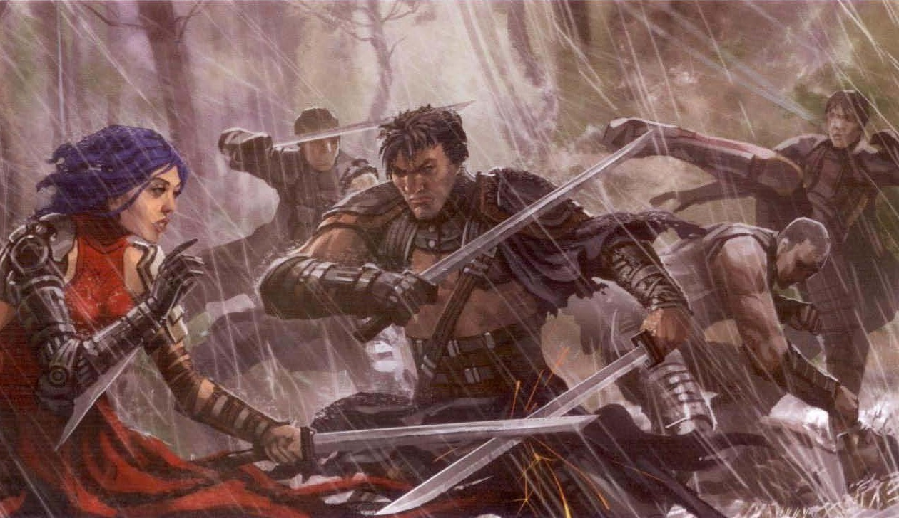In order to separate themselves from the ever-growing influence of the fledgeling Galactic Republic, the Jedi Order relocated from the Deep Core planet of Tython to the Outer Rim planet of Ossus. Jedi named Xendor and Lyn left, against the Order's will, and began a academy on the planet of Lettow. These Jedi became known as the Legions of Lettow. This schism resulted in war between the two Jedi groups.
-
24,000-23,900 BBY
Tionese War
The Tionese War was fought between the Galactic Republic and the Honorable Union of Desevro & Tion. Ultimately, the Galactic Republic won the conflict with the aid of the Jedi. The Republic won the war by turing the Hutts against the Union. In the end, all of the worlds, with the exception of Desevro, joined the Rpublic. The war resulted in the Jedi officially declaring themselves loyal to the Republic.
-
7,003
BBYThe Second Great Schism
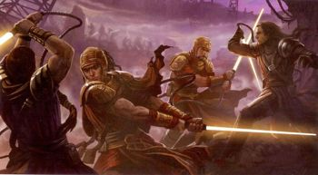The Jedi who practiced alchemy and the Dark Side of the Force split from the Jedi Order. The Hundred-Year Darkness, as well as the formation of the sith, followed this split.
-
7,000-6,900
BBYHundred-Year Darkness
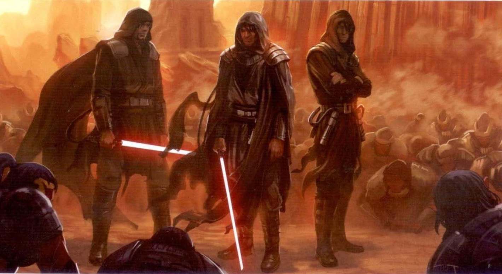This era saw the formation of the Sith when a rogue Jedi lead others astray. Battles during this era included the Great Scourge of Malachor, where many Jedi and Sith had their remains petrified on the planet of Malachor. Kylo Ren's lightsaber seems to be from the era. Moreover, following the Battle of Takodana, Maz Kanata's castle was constructed. The Sith began errecting huge temples on the planet Korriban, transforming the planet into their sacred place.
-
5,000
BBYThe Great Hyperspace War
The Sith Empire was discovered by Gav and Jori Daragon. In the following conflict, the Republic and Jedi defeated the Sith, forcing the Sith Lord Naga Sadow to flee to Yavin 4. To show its appreciation of the Jedi, the Galactic Republic gave the Jedi a temple on Coruscant.

-
4,250
BBYThird Great Schism
Jedi influenced by the Sith turned against the Order. After fighting on Coruscant the Dark Jedi were forced to the Vultar System. Attempting to use the Cosmic Turbine, the Dark Jedi inadvertantly destroyed the Vultar System in what is called the Vultar Cataclysm.
-
3,996
BBYThe Great Sith War
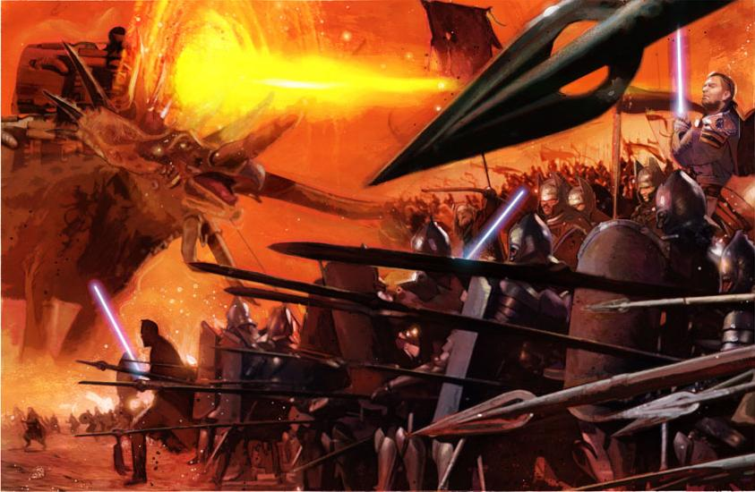When Sith Lord Freedon Nadd's power was discovered on the planet Onderon by the Jedi, the Jedi temporarily broke his hold of the planet. However, the Sith retaliated, and Jedi Knight Ulic Qel-Droma inflitrated the Sith, only to fall prey to the Dark Side thanks to Exar Kun. During a battle on Ossus, Kun retreated to Yavin 4 and Qel-Droma was captured. Qel-Droma recognized his failure and led the Jedi and the Republic Rim Fleet to Yavin 4, where Exar Kun was defeated.
-
3,976-3,960
BBYThe Mandalorian Wars
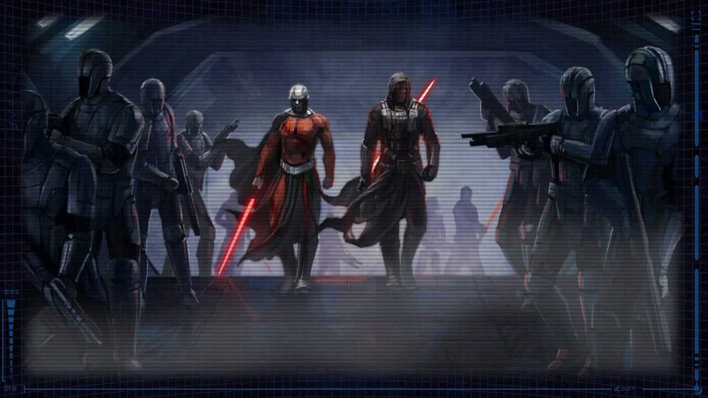The Mandalorains, under the leadership of Mandalore the Ultimate and his lieutenant Cassus Fett, conquered systems on the edge of the galaxy. Jedi Knight Revan hid the Mandalorian's symbol of leadership, the Mandalore's Mask, and turned to the Dark Side while investigating the Sith that had encouraged the Mandalorians to go to war.
-
3,970-3,670
BBYThe Kanz Disorders
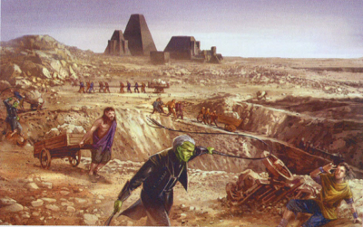Myrial seceeded the Kanz sector from the republic, destroying planets such as Ereesi and enslaving the Lorrdian species. A bioengineered monster was placed in the Pits of Lorrd, and many slaves were murdered by the beast. Finally, Lorrdian Jedi Knight Mari-Elan Nora led a force that liberated the slaves. Overall, the conflict was a Republic failure to protect it's citizens; over 500 million Lorrdians, as well as 5 billion other beings, had been killed.
-
3,958-3,956
BBYThe Second Great Sith War (The Jedi Civil War)
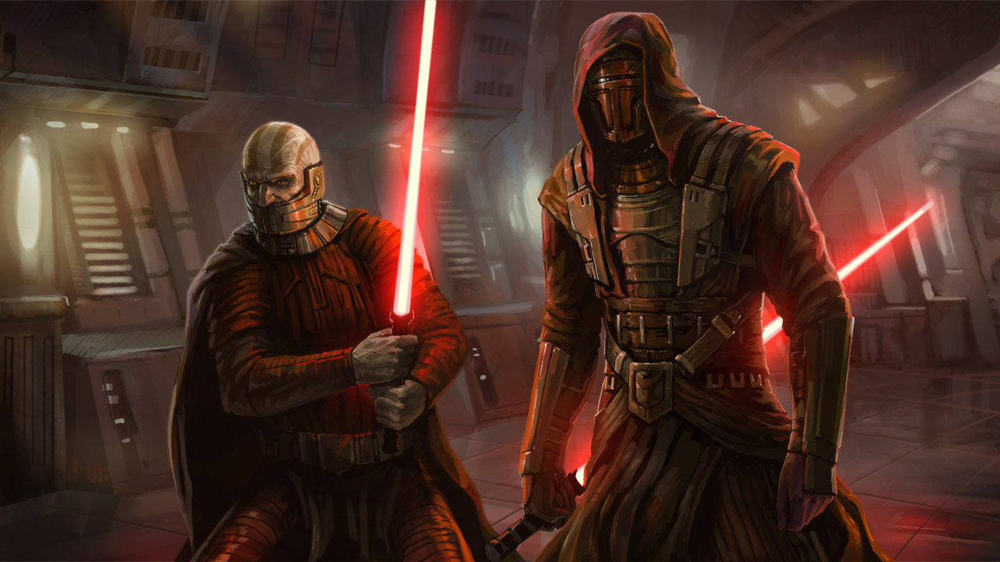Founding his own Sith Empire, Jedi Knight Revan, as well as his apprentice, Darth Malak, invaded the Galactic Republic. Revan was returned to the Jedi and later killed Malak and destroyed the Star Forge, ending the war.
-
3,956-3,950
BBYThe Sith Civil War & First Jedi Purge
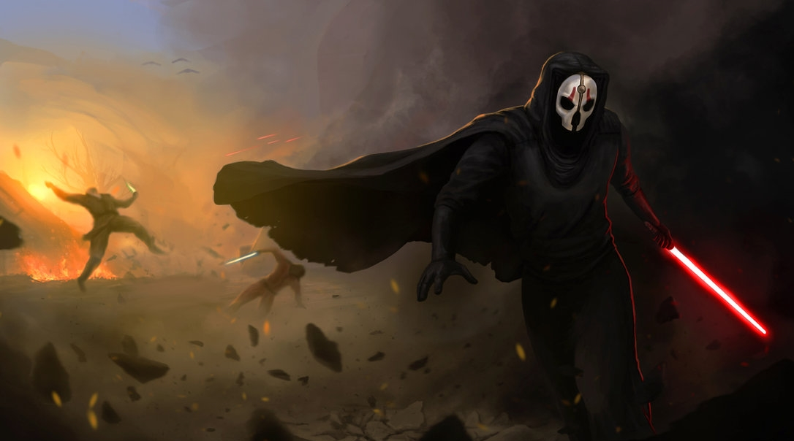After the death of Darth Malak, the Sith split into waring factions, supporting Sith leaders such as Darth Nihilus and Darth Sion. The constant fighting between the factions made it easier for the Republic to conquer Sith space. However, from 3,954-3,951, the Sith killed a large percentage of the Jedi in what was called the First Jedi Purge.
-
3,681-3,653
BBYThe Great Galactic War (Republic-Sith War)
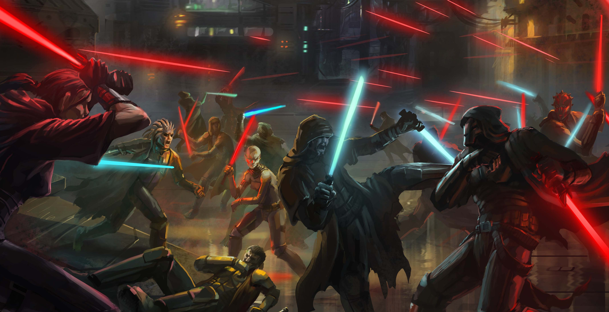The Republic attempted to dispose of the remains of the Sith Empire. Unfortunately, the Sith Emperor's Imperial Empire retook the Sith homeword of Korriban. Dread Masters, Sith Lords who caused dozens of Republic ships to flee in terror, where eventually infiltrated by the Republic, and the Sith were likewise defeated during the Battle of Alderaan. The Sith began to recruit the Mandalorians once again, and both the Republic and the Sith developed their first superweapons. Eventually, Coruscant was sacked by the Sith, and the Treaty of Coruscant was signed, giving the Sith control of half the galaxy.
-
3,642-3,636
BBYThe Galactic War
After a period of cold war following the Treaty of Coruscant, the Eternal Empire under Emperor Arcann, overran both the Sith Empire and the Republic. Surprisingly, the "Eternal" Empire would last only four years before it was disbanded.
-
3,632
BBYRevolt Against the Eternal Empire
The power of the new Eternal Empire was challenged by the Outlander, who had been encased in carbonite for years. Sith and Jedi alike alied and formed an alliance on the planet Odessen, ultimately destroying the Eternal Empire.
-
2,000-1,000
BBYNew Sith Wars & Fourth Great Schism
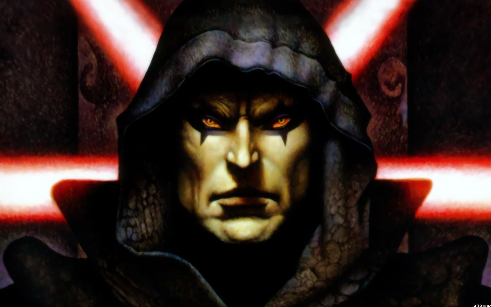The wars began with the Fourth Great Schism when Darth Ruin established the New Sith. During the Era, which was broken down into several conflicts such as the Sictis Wars, Republic Dark Age, and the Light and Darkness War, the balance of power between the Jedi and the Sith fluctuated. On the planet Ruusan, the Jedi assumed that they had defeated all of the Sith. Unfortunately, one Sith Lord, Darth Bane, survived. The time period is called a variety of different names such as The Dreggulch Period, Jedi-Sith War, War of the Fittest, The Betrayal, and The Curse of Qalydon.
-
22-19
BBYThe Clone Wars & Great Jedi Purge
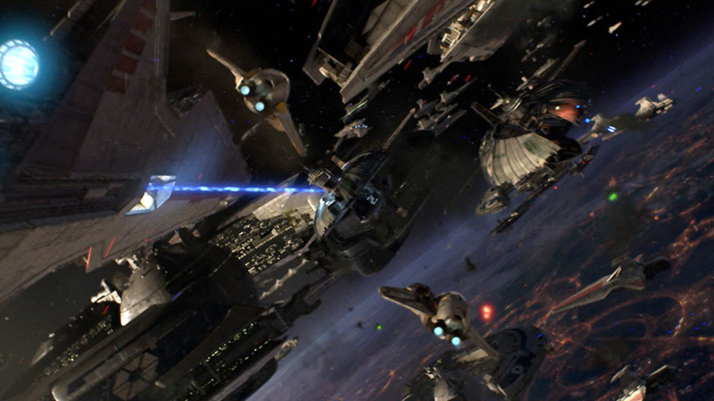Following a long period of relative peace in the Republic, the Trade Federation, under the secret leadership of Sith Lords Darth Plagueis and Darth Sidious, began a blockade. Later, the Battle of Geonosis would start a 3 year war. In the end, the Imperial Empire would be re-established, with Darth Sidious reigning as Emperor. The Jedi Order was destroyed during the Great Jedi Purge/Palpatine's Purge.
-
0
BBYThe Battle of Yavin
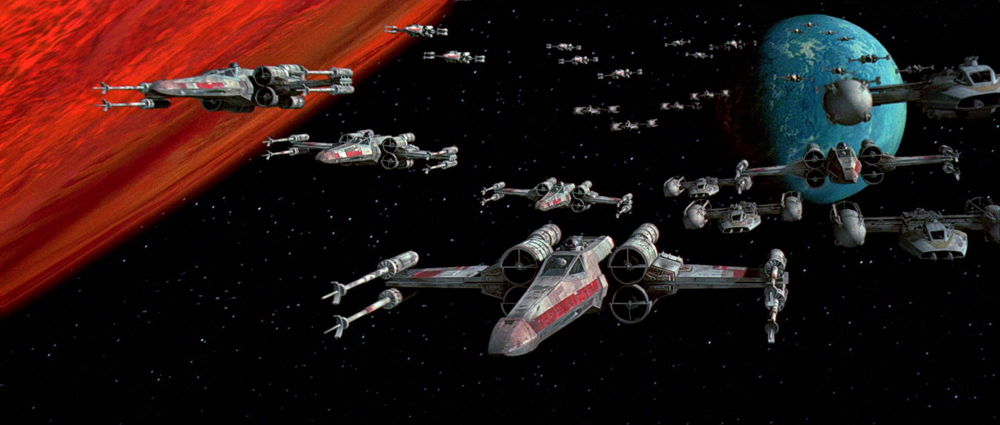A small and overpowered Alliance destoyed the Empire's prized Death Star with the help of Luke and Leia Skywalker, Han Solo, and many others. The Alliance survived and would continue to fight until the fall of the Empire a few years later. As a result of the battle's importance, it would be used as the year 0 BBY (Before the Battle of Yavin) and 0 ABY (After the Battle of Yavin).
-
0-4
ABYThe Galactic Civil War
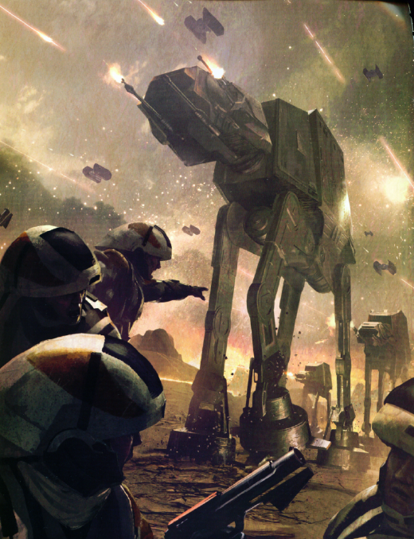The Alliance and Imperian Empire fought; the Alliance destroyed two Death Stars, and the Emperor, as well as his apprentice Darth Vador, were killed. A New Galactic Republic was announced.
-
34+
ABYThe Second Galactic Civil War*
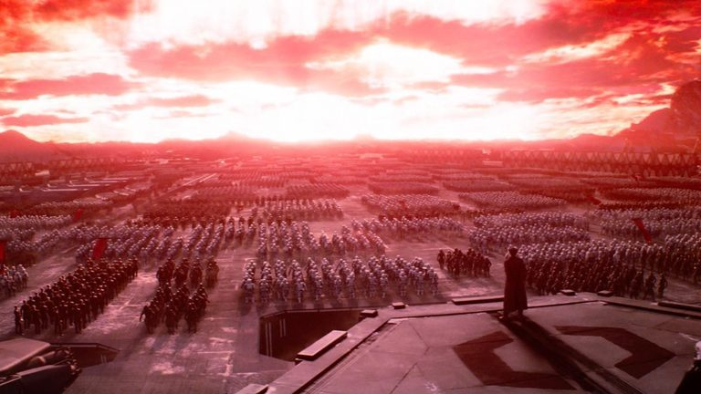The fledgeling New Republic is challenged by Kylo Ren (formerly Ben Solo) and Supreme Leader Snoke's forces. The Siths' Star Killer Base is destroyed by the New Republic. *Not an Official Title